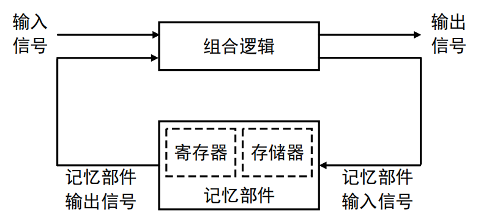
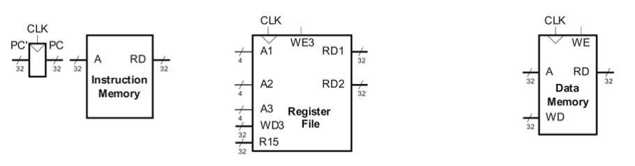
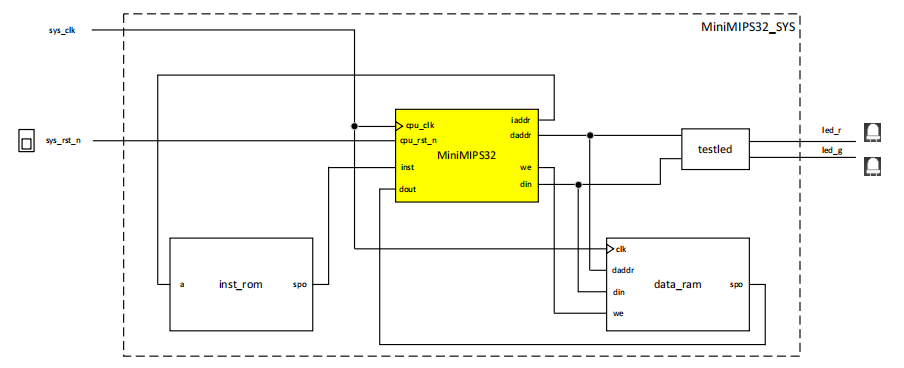
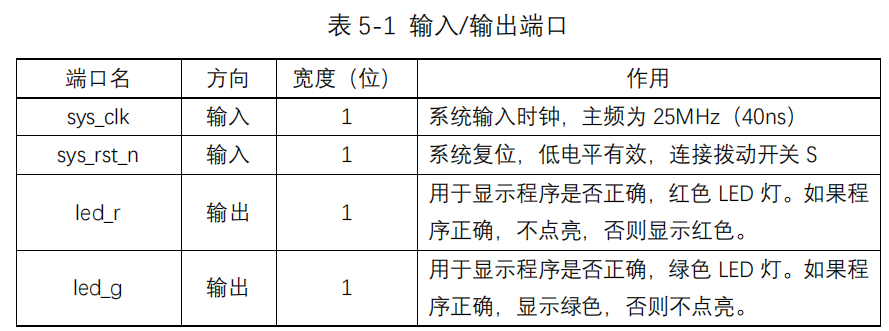
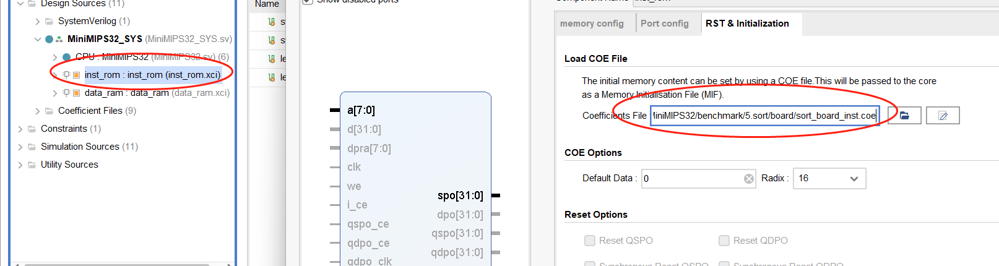
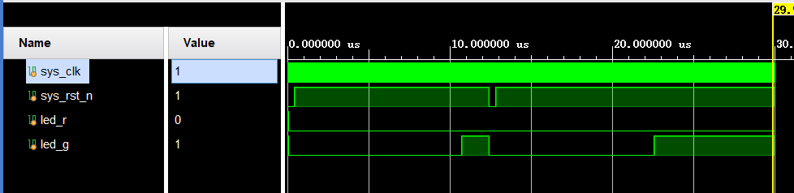
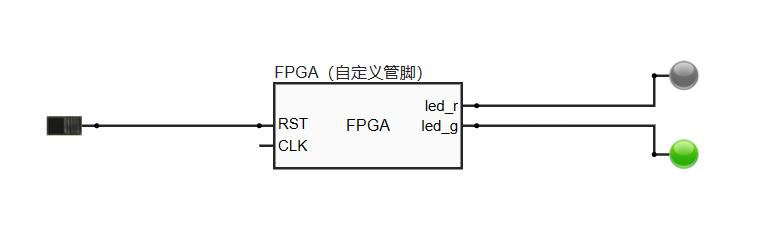

实验四、单周期MIPS处理器的设计与实现 一、实验目的
熟悉 MIPS 处理器的常用指令集（10 条）
掌握单周期处理器数据通路和控制单元的设计方法
基于增量方式，实现单周期 MIPS 处理器；
基于测试用例对所设计的单周期 MIPS 处理器进行功能验证。
二、实验环境
操作系统：Windows 10 或 Ubuntu 16.04
开发环境：Xilinx Vivado 2018.2
硬件平台：远程 FPGA 硬件云平台
三、实验原理 处理器（CPU）本质上是一个复杂的数字时序电路。通常，时序电路由记忆部件（如寄存器、存储器等）和组合逻辑构成。记忆部件用于保存电路的工作状态，而组合逻辑则由逻辑门组成，提供电路的所有逻辑功能。在组合逻辑的作用下，电路从一个状态转化为另一个状态，这样的电路也称为“状态机”。因此，单周期 MIPS 处理器在概念上也可以被看作一个大规模的状态机，如下图所示。其中，组合逻辑依据当前记忆部件中的值（即电路的现态）对指令进行处理，这个处理过程将再次修改记忆部件的值，使电路达到新状态（即电路的次态）。

在设计单周期 CPU 这样复杂的时序电路系统时，通常的方法是从包含记忆部件的硬件开始。这些元件包括存储器 和寄存器 ，寄存器又可分为程序计数器 和寄存器文件 。然后，在这些存储元件之间增加组合逻辑基于当前状态计算新的状态。从指令存储器中读取指令，然后译码时访问寄存器文件获取操作数，再使用加载和存储指令从数据存储器中读取和写入数据。下面给出了具有 4 种状态元件（程序计数器 PC 、寄存器文件 、指令存储器 和数据存储器 ）的框图。

四、实验内容 基于 SystemVerilog HDL 设计并实现单周期 MIPS 处理器——MiniMIPS32。
该处理器具有如下特点：
⚫ 32 位数据通路
⚫ 小端模式
⚫ 支持 10 条指令：lw、sw、lui、ori、addiu、addu、slt、beq、bne 和 j
⚫ 寄存器文件由 32 个 32 位寄存器组成，采用异步读/同步写工作模式
⚫ 采用哈佛结构（即分离的指令存储器和数据存储器），指令存储器由ROM构成，采用异步读工作模式；数据存储器由 RAM 构成，采用异步读/同步写工作模式。
顶层模块MiniMIPS32_SYS结构图如下：

下表给出了给出了顶层模块 MiniMIPS32_SYS 的输入/输出端口。

最终设计实现的单周期MIPS处理器能够运行所提供的6个测试用例 mem.S，i-type.S，r-type.S，branch.S，sort_sim.S 和 sort_board.S 。其中，前 5 个只能用于功能仿真；最后一个可以上传到远程 FPGA 硬件云平台完成功能验证，如果测试通过则 LED 灯 led_g 被点亮为绿色，否则 LED 灯 led_r 被点亮为红色。
五、实验步骤 （一）MiniMIPS的总体设计 由于MiniMIPS32模块较为复杂，所以我划分为了6个子模块，对应不同的功能
由于CPU的执行指令过程为：取指、译码、执行、访存、写回（、更新PC） ，因此我划分为ControlUnit 、Register_File、ALUOps、RegWriteDataSelect、AddressCalculation、pc这六个子模块，功能如下：
指令获取 ：从指令存储器中获取当前指令，并将指令传递给 ControlUnit 进行译码。
译码 ：ControlUnit 根据指令的操作码和功能码，生成相应的控制信号，指导各个模块的操作。
寄存器读写 ：Register_File 根据控制信号和指令中的寄存器地址，进行寄存器的读写操作。
ALU 操作 ：ALUOps 根据控制信号，对操作数进行相应的运算，并输出结果。
数据选择 ：RegWriteDataSelect 根据控制信号，选择写回寄存器的数据和目标地址。
地址计算 ：AddressCalculation 根据控制信号和指令，计算下一条指令的地址。
程序计数器更新 ：pc 模块在时钟上升沿更新程序计数器的值。
1. ControlUnit.sv 功能描述 ：
控制单元模块根据指令操作码 (op) 和功能码 (funct)，生成各种控制信号，以指导处理器的不同部分如何操作。
该模块输入操作码和功能码，并输出多个控制信号。
输入信号 ：
op：指令的操作码。funct：指令的功能码（仅对 R 型指令有用）。RD1、RD2：来自寄存器文件的两个操作数。daddr：数据存储器地址。
输出信号 ：
we：数据存储器写使能信号。we3：寄存器文件写使能信号。pcflag：程序计数器更新标志。regdst：寄存器目标选择信号。mem_to_reg：内存到寄存器数据选择信号。j_flag：跳转指令标志。alusrc：ALU 第二操作数选择信号。AluControl：ALU 控制信号。
作用 ：
根据指令类型和具体功能，生成相应的控制信号，确保处理器各个部分按照预期的方式操作。例如，lw 和 sw 指令需要访问数据存储器，ControlUnit 生成的信号会指示数据存储器进行读或写操作。
2. Register_File.sv 功能描述 ：
寄存器文件模块实现了一个包含 32 个 32 位寄存器的存储结构。提供对寄存器的读写功能。
输入信号 ：
sys_clk：系统时钟信号。WE3：写使能信号。sys_rst_n：系统复位信号（低电平有效）。A1、A2、A3：要读取或写入的寄存器地址。WD3：要写入寄存器的数据。
输出信号 ：
作用 ：
在时钟上升沿或复位时，更新寄存器值。根据输入地址和控制信号，实现对寄存器的读写操作。
3. ALUOps.sv 功能描述 ：
ALU 操作模块实现算术逻辑单元 (ALU) 的功能。根据控制信号执行不同的运算，如加法、减法、与、或等。
输入信号 ：
alu1：ALU 的第一个操作数。alu2：ALU 的第二个操作数。AluControl：控制信号，决定 ALU 要执行的具体操作。
输出信号 ：
作用 ：
根据 AluControl 信号，对 alu1 和 alu2 进行相应的运算，并输出结果。例如，如果 AluControl 信号指示加法操作，ALU 就会对 alu1 和 alu2 进行加法运算，并将结果输出到 aluresult。
4. RegWriteDataSelect.sv 功能描述 ：
输入信号 ：
regdst：寄存器目标选择信号，决定写回寄存器地址是 rd 还是 rt。mem_to_reg：内存到寄存器数据选择信号，决定写回的数据是来自 ALU 还是数据存储器。rt、rd：指令中的寄存器地址字段。aluresult：ALU 运算结果。dout：从数据存储器读取的数据。
输出信号 ：
A3：要写入的寄存器地址。WD3：要写入寄存器的数据。
作用 ：
根据 regdst 信号，决定要写入的寄存器地址是 rd 还是 rt。根据 mem_to_reg 信号，决定写入寄存器的数据是 ALU 结果还是从内存读取的数据。
5. AddressCalculation.sv 功能描述 ：
地址计算模块负责计算下一条指令的程序计数器 (PC) 值。
输入信号 ：
pcflag：程序计数器更新标志。j_flag：跳转指令标志。next_addr：当前的程序计数器值。extend：符号扩展后的立即数。instr_index：跳转指令的目标地址。
输出信号 ：
current_addr：计算后的下一条指令地址。
作用 ：
根据 pcflag 和 j_flag 信号，决定程序计数器的更新方式。处理顺序执行、条件分支和无条件跳转等情况，计算出下一条指令的地址。
6. pc.sv 功能描述 ：
输入信号 ：
cpu_clk：系统时钟信号。cpu_rst_n：系统复位信号（低电平有效）。current_addr：当前的程序计数器值。
输出信号 ：
作用 ：
在时钟上升沿，根据复位信号和输入的 current_addr，更新程序计数器的值。确保处理器按照正确的指令地址执行。
（二）lw 和 sw（访存类指令） 1.ControllerUnit.sv 在 ControlUnit 模块中添加 lw 和 sw 指令的控制逻辑。
1 2 3 4 5 6 7 8 9 10 11 12 13 14 15 16 17 18 19 20 21 22 23 24 25 26 27 28 29 30 31 32 33 34 35 36 37 38 39 40 41 42 43 44 45 46 47 48 49 50 module ControlUnit( input logic [5:0] op, input logic [5:0] funct, input logic [31:0] RD1, input logic [31:0] RD2, input logic [31:0] daddr, output logic we, output logic we3, output logic pcflag, output logic regdst, output logic mem_to_reg, output logic j_flag, output logic [1:0] alusrc, output logic [1:0] AluControl ); always_comb begin we = 0; we3 = 0; pcflag = 0; regdst = 0; mem_to_reg = 0; j_flag = 0; alusrc = 2'b00; AluControl = 2'b00; case(op) 6'b100011: begin // lw we = 0; we3 = 1; pcflag = 0; regdst = 0; alusrc = 2'b01; mem_to_reg = 1; j_flag = 0; AluControl = 2'b00; end 6'b101011: begin // sw we = (daddr[31:16] != 16'h8000 && daddr[31:16] != 16'h8004); we3 = 0; pcflag = 0; regdst = 0; alusrc = 2'b01; mem_to_reg = 0; j_flag = 0; AluControl = 2'b00; end default: pcflag = 0; endcase end endmodule
lw 指令：控制信号 we 设为 0（不写数据存储器），we3 设为 1（写寄存器文件），alusrc 设为 2'b01（选择符号扩展后的立即数作为 ALU 的第二个操作数），mem_to_reg 设为 1（选择从数据存储器读取的数据写回寄存器），AluControl 设为 2'b00（执行加法操作）。
sw 指令：控制信号 we 根据地址判断是否写数据存储器（避免与特定地址冲突），we3 设为 0（不写寄存器文件），alusrc 设为 2'b01，mem_to_reg 设为 0，AluControl 设为 2'b00。
2.Register_File.sv 寄存器文件模块，读取和写入寄存器。
在时钟上升沿或复位时，更新寄存器文件的值。
根据 WE3 信号，决定是否将 WD3 写入到地址 A3 对应的寄存器。
读取地址 A1 和 A2 对应的寄存器值，并分别输出到 RD1 和 RD2。
1 2 3 4 5 6 7 8 9 10 11 12 13 14 15 16 17 18 19 20 21 22 23 24 25 26 27 module Register_File( input sys_clk, input WE3, input sys_rst_n, input [4:0] A1, input [4:0] A2, input [4:0] A3, input [31:0] WD3, output logic [31:0] RD1, output logic [31:0] RD2 ); logic [31:0] r [31:0]; always_ff @(posedge sys_clk) begin if (!sys_rst_n) begin for (int i = 0; i < 32; i++) begin r[i] <= 32'd0; end end else if (WE3) begin r[A3] <= WD3; end end assign RD1 = r[A1]; assign RD2 = r[A2]; endmodule
3.ALUOps.sv 实现加法操作,根据 AluControl 信号，执行加法操作。对于 lw 和 sw 指令，ALU 需要执行加法操作，将基址寄存器的值与立即数相加，得到内存访问地址。
1 2 3 4 5 6 7 8 9 10 11 12 13 module ALUOps( input logic [31:0] alu1, input logic [31:0] alu2, input logic [1:0] AluControl, output logic [31:0] aluresult ); always_comb begin case (AluControl) 2'b00: aluresult = alu1 + alu2; // 加法操作 default: aluresult = 32'b0; endcase end endmodule
4.RegWriteDataSelect.sv 选择写回寄存器的数据和目标寄存器地址。具体来讲
根据 regdst 信号，决定写回的寄存器地址是 rd 还是 rt。
根据 mem_to_reg 信号，决定写回的数据是来自内存还是 ALU 运算结果。
1 2 3 4 5 6 7 8 9 10 11 12 13 module RegWriteDataSelect( input logic regdst, input logic mem_to_reg, input logic [4:0] rt, input logic [4:0] rd, input logic [31:0] aluresult, input logic [31:0] dout, output logic [4:0] A3, output logic [31:0] WD3 ); assign A3 = regdst ? rd : rt; assign WD3 = mem_to_reg ? {dout[7:0], dout[15:8], dout[23:16], dout[31:24]} : aluresult; endmodule
5.AddressCalculation.sv 计算下一条指令的程序计数器 (PC) 值。处理顺序执行和条件分支指令，计算下一条指令的地址。
对于 lw 和 sw 指令，程序计数器顺序递增。
1 2 3 4 5 6 7 8 9 10 11 12 13 14 15 16 17 18 19 20 module AddressCalculation( input logic pcflag, input logic j_flag, input logic [31:0] next_addr, input logic [31:0] extend, input logic [25:0] instr_index, output logic [31:0] current_addr ); always_comb begin if (!j_flag) begin if (!pcflag) current_addr = next_addr + 4; else current_addr = next_addr + 4 + (extend << 2); end else begin logic [31:0] mid = next_addr + 4; current_addr = {mid[31:28], instr_index, 2'b00}; end end endmodule
6.pc.sv 程序计数器模块,在时钟上升沿，根据复位信号和输入的 current_addr，更新程序计数器的值。
1 2 3 4 5 6 7 8 9 10 11 12 13 14 module pc( input logic cpu_clk, input logic cpu_rst_n, input logic [31:0] current_addr, output logic [31:0] next_addr ); always_ff @(posedge cpu_clk) begin if (!cpu_rst_n) next_addr <= 32'd0; else next_addr <= current_addr; end endmodule
7.顶层模块 将各个子模块联系起来构成完整的系统
从指令存储器获取当前指令，传递给 ControlUnit 进行译码，生成控制信号。
根据控制信号，Register_File 模块读取或写入寄存器。
ALUOps 模块执行相应的运算，并输出结果。
RegWriteDataSelect 模块选择写回寄存器的数据和目标地址。
AddressCalculation 模块计算下一条指令的地址。
pc 模块在时钟上升沿更新程序计数器的值。
1 2 3 4 5 6 7 8 9 10 11 12 13 14 15 16 17 18 19 20 21 22 23 24 25 26 27 28 29 30 31 32 33 34 35 36 37 38 39 40 41 42 43 44 45 46 47 48 49 50 51 52 53 54 55 56 57 58 59 60 61 62 63 64 65 66 67 68 69 70 71 72 73 74 75 76 77 78 79 80 81 82 83 84 85 86 87 88 89 90 91 92 93 94 95 96 97 98 99 100 101 102 103 104 105 106 107 108 109 110 111 112 113 114 115 116 117 118 `include "defines.sv" module MiniMIPS32( input logic cpu_clk, input logic cpu_rst_n, output logic [31:0] iaddr, input logic [31:0] inst, output logic [31:0] daddr, output logic we, output logic [31:0] din, input logic [31:0] dout ); logic [31:0] Instruction; logic [5:0] op, funct; logic [4:0] rs, rt, rd; logic [15:0] imm; logic [25:0] instr_index; logic [31:0] current_addr; logic [31:0] next_addr; logic [31:0] aluresult; logic [31:0] extend; logic [31:0] extend_0; logic [31:0] alu1; logic [31:0] alu2; logic [31:0] RD1; logic [31:0] RD2; logic [31:0] WD3; logic [4:0] A3; logic we3, pcflag, regdst, mem_to_reg, j_flag; logic [1:0] alusrc, AluControl; assign Instruction = {inst[7:0], inst[15:8], inst[23:16], inst[31:24]}; assign op = Instruction[31:26]; assign rs = Instruction[25:21]; assign rt = Instruction[20:16]; assign rd = Instruction[15:11]; assign imm = Instruction[15:0]; assign funct = Instruction[5:0]; assign instr_index = Instruction[25:0]; ControlUnit cu( .op(op), .funct(funct), .RD1(RD1), .RD2(RD2), .daddr(daddr), .we(we), .we3(we3), .pcflag(pcflag), .regdst(regdst), .mem_to_reg(mem_to_reg), .j_flag(j_flag), .alusrc(alusrc), .AluControl(AluControl) ); Register_File rf( .sys_clk(cpu_clk), .WE3(we3), .sys_rst_n(cpu_rst_n), .A1(rs), .A2(rt), .RD1(RD1), .RD2(RD2), .A3(A3), .WD3(WD3) ); always_comb begin extend = {{16{imm[15]}}, imm}; extend_0 = {16'b0, imm}; alu1 = RD1; alu2 = (alusrc == 2'b00) ? RD2 : (alusrc == 2'b01) ? extend : extend_0; end ALUOps alu_ops( .alu1(alu1), .alu2(alu2), .AluControl(AluControl), .aluresult(aluresult) ); RegWriteDataSelect reg_write_data_select( .regdst(regdst), .mem_to_reg(mem_to_reg), .rt(rt), .rd(rd), .aluresult(aluresult), .dout(dout), .A3(A3), .WD3(WD3) ); AddressCalculation addr_calc( .pcflag(pcflag), .j_flag(j_flag), .next_addr(next_addr), .extend(extend), .instr_index(instr_index), .current_addr(current_addr) ); assign daddr = aluresult; assign {din[7:0], din[15:8], din[23:16], din[31:24]} = RD2; pc pc_count( .cpu_clk(cpu_clk), .cpu_rst_n(cpu_rst_n), .current_addr(current_addr), .next_addr(next_addr) ); assign iaddr = next_addr; endmodule
（二）lui、ori 和 addiu（I-型指令） 1.ControllerUnit.sv 1 2 3 4 5 6 7 8 9 10 11 12 13 14 15 16 17 18 19 20 21 22 23 24 25 26 27 28 29 30 31 32 33 34 35 36 37 38 39 40 41 42 .......... 6'b101011: begin // sw we = (daddr[31:16] != 16'h8000 && daddr[31:16] != 16'h8004); we3 = 0; pcflag = 0; regdst = 0; alusrc = 2'b01; mem_to_reg = 0; j_flag = 0; AluControl = 2'b00; end 6'b001111: begin // lui we = 0; we3 = 1; pcflag = 0; regdst = 0; alusrc = 2'b10; mem_to_reg = 0; j_flag = 0; AluControl = 2'b10; end 6'b001101: begin // ori we = 0; we3 = 1; pcflag = 0; regdst = 0; alusrc = 2'b10; mem_to_reg = 0; j_flag = 0; AluControl = 2'b01; end 6'b001001: begin // addiu we = 0; we3 = 1; pcflag = 0; regdst = 0; alusrc = 2'b01; mem_to_reg = 0; j_flag = 0; AluControl = 2'b00; end ..........
2.ALUOps.sv 1 2 3 4 5 6 7 8 9 10 .......... always_comb begin case (AluControl) 2'b00: aluresult = alu1 + alu2; // 加法操作 2'b01: aluresult = alu1 | alu2; // ORI 操作 2'b10: aluresult = alu2 << 16; // LUI 操作 default: aluresult = 32'b0; endcase end ..........
3.顶层模块 为了使 lui 指令工作，需要确保立即数在 lui 指令中的扩展方式正确。以下代码片段应在顶层模块的 always_comb 块中：
1 2 3 4 5 6 7 8 .......... always_comb begin extend = {{16{imm[15]}}, imm}; extend_0 = {imm, 16'b0}; // 对于LUI指令，高16位是立即数，低16位为0 alu1 = RD1; alu2 = (alusrc == 2'b00) ? RD2 : (alusrc == 2'b01) ? extend : extend_0; end ..........
以上增加的代码片段在 ControlUnit.sv 和 ALUOps.sv 中添加了对 lui、ori 和 addiu 指令的控制逻辑和操作，实现了对这三条 I-型指令的支持。在顶层模块中添加了立即数的扩展方式以支持 lui 指令。
（三）addu 和 slt（R-型指令） 1.ControllerUnit.sv 1 2 3 4 5 6 7 8 9 10 11 12 13 14 15 16 17 18 19 20 21 22 23 24 25 26 27 28 29 30 31 32 33 34 .......... 6'b001001: begin // addiu we = 0; we3 = 1; pcflag = 0; regdst = 0; alusrc = 2'b01; mem_to_reg = 0; j_flag = 0; AluControl = 2'b00; end 6'b000000: begin // R-type if(funct == 6'b100001) begin // addu we = 0; we3 = 1; pcflag = 0; regdst = 1; alusrc = 2'b00; mem_to_reg = 0; j_flag = 0; AluControl = 2'b00; end else if(funct == 6'b101010) begin // slt we = 0; we3 = 1; pcflag = 0; regdst = 1; alusrc = 2'b00; mem_to_reg = 0; j_flag = 0; AluControl = 2'b11; end end ..........
2.ALUOps.sv 1 2 3 4 5 6 7 8 9 10 11 .......... always_comb begin case (AluControl) 2'b00: aluresult = alu1 + alu2; // 加法操作 2'b01: aluresult = alu1 | alu2; // ORI 操作 2'b10: aluresult = alu2 << 16; // LUI 操作 2'b11: aluresult = (alu1 < alu2) ? 32'b1 : 32'b0; // SLT 操作 default: aluresult = 32'b0; endcase end ..........
3.顶层模块 顶层模块中，已包含了立即数扩展的代码，现需确保 funct 字段的操作也被正确处理：
1 2 3 .......... assign funct = Instruction[5:0]; ..........
（四）beq、bne 和 j（转移指令） 1.ControllerUnit.sv 1 2 3 4 5 6 7 8 9 10 11 12 13 14 15 16 17 18 19 20 21 22 23 24 25 26 27 28 29 30 31 32 33 34 35 36 37 38 39 40 41 42 43 44 45 46 47 48 49 50 51 52 53 54 .......... 6'b000000: begin // R-type if(funct == 6'b100001) begin // addu we = 0; we3 = 1; pcflag = 0; regdst = 1; alusrc = 2'b00; mem_to_reg = 0; j_flag = 0; AluControl = 2'b00; end else if(funct == 6'b101010) begin // slt we = 0; we3 = 1; pcflag = 0; regdst = 1; alusrc = 2'b00; mem_to_reg = 0; j_flag = 0; AluControl = 2'b11; end end 6'b000100: begin // beq we = 0; we3 = 0; pcflag = (RD1 == RD2); regdst = 0; alusrc = 2'b00; mem_to_reg = 0; j_flag = 0; AluControl = 2'b00; end 6'b000101: begin // bne we = 0; we3 = 0; pcflag = (RD1 != RD2); regdst = 0; alusrc = 2'b00; mem_to_reg = 0; j_flag = 0; AluControl = 2'b00; end 6'b000010: begin // j we = 0; we3 = 0; pcflag = 0; regdst = 0; alusrc = 2'b00; mem_to_reg = 0; j_flag = 1; AluControl = 2'b00; end ..........
2.AddressCalculation.sv 在 AddressCalculation 模块中已处理条件分支和无条件跳转的逻辑，无需增加新的代码，只需确保现有代码正确计算跳转地址：
1 2 3 4 5 6 7 8 9 10 11 12 13 .......... always_comb begin if (!j_flag) begin if (!pcflag) current_addr = next_addr + 4; else current_addr = next_addr + 4 + (extend << 2); end else begin logic [31:0] mid = next_addr + 4; current_addr = {mid[31:28], instr_index, 2'b00}; end end ..........
3.顶层模块 顶层模块中，已包含了对 instr_index 的处理代码，现需确保 pcflag 和 j_flag 信号被正确使用：
1 2 3 4 5 6 7 8 9 10 11 12 .......... assign instr_index = Instruction[25:0]; .......... always_comb begin extend = {{16{imm[15]}}, imm}; extend_0 = {imm, 16'b0}; // 对于LUI指令，高16位是立即数，低16位为0 alu1 = RD1; alu2 = (alusrc == 2'b00) ? RD2 : (alusrc == 2'b01) ? extend : extend_0; pc_src = pcflag; next_pc = (j_flag) ? {next_pc[31:28], instr_index, 2'b00} : (pc_src ? (next_pc + 4 + (extend << 2)) : (next_pc + 4)); end ..........
（六）实验结果 仿真前加载相应的指令和数据，即分别加载XXX_inst.coe和XXX_data.coe

我对仿真测试的代码进行了略微的修改，以便于测试重置后是否能够再次正常运行，修改部分如下
1 2 3 4 5 6 7 8 9 10 11 12 13 14 initial begin // Initialize Inputs sys_clk = 0; sys_rst_n = 0; #400 sys_rst_n = 1; //#15000 $stop; #12000 sys_rst_n = 0; #400 sys_rst_n = 1; end
仿真结果：

远程平台验证结果：
